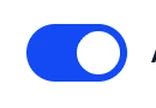
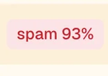
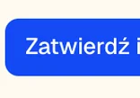
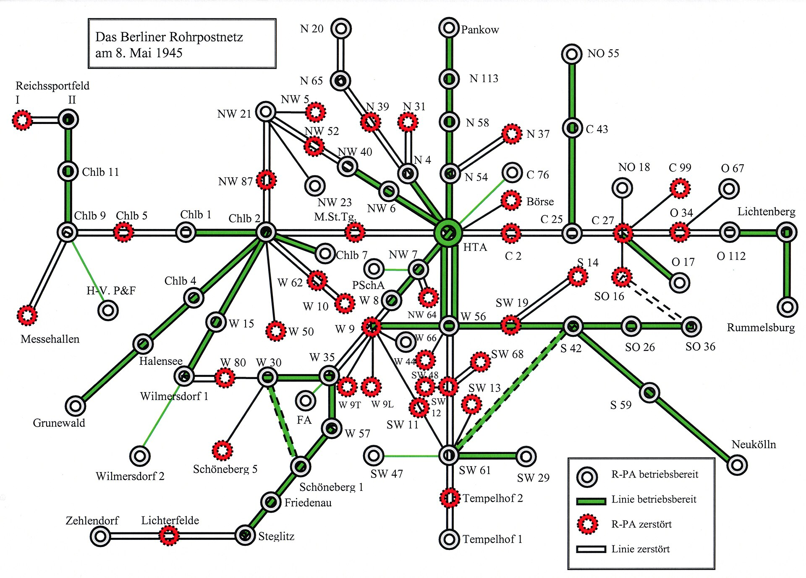
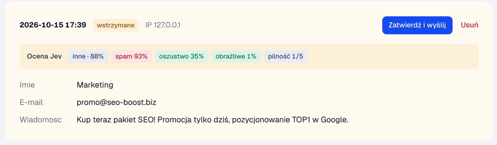

Strona zostaje statyczna, formularz trafia do formd   
16 bitów pracy
Tyle zadania SHA-256 dostaje każda przeglądarka, zanim wyśle formularz. Dla człowieka to ułamek sekundy, dla bota z tysiącem zgłoszeń już nie. Przesuń suwak i sprawdź na swoim urządzeniu.
Średnia liczba prób rośnie dwukrotnie z każdym bitem.
- prób średnio
- 65 536
- Twój czas
- —
- bot × 1000
- —
Najpierw token
Przy wejściu na stronę formd.js pobiera token podpisany HMAC. Jest jednorazowy, przypisany do formularza i ważny dwie godziny.
GET /f/kontakt/challenge
{
"token": "djF8a29udGFrdHwxNzk3NDE…",
"bits": 16,
"min_seconds": 3
}Przeglądarka szuka rozwiązania
sha256(token + ":51514")
= 0000 7c1f 9a42 e1b0 …16 zerowych bitów, wysyłam
POST /f/kontakt
- Origin https://example.comdozwolony
- Limit dla IP2 z 5
- Token HMACpierwsze użycie
- Czas wypełnienia4,2 s
- Pola3 z 3
- Pole-pułapkapuste
- Duplikatnie
- Ocena Jevspam 4%
Kolejka maili
- Token
- Proof-of-work
- Kontrola
- Wysyłka

Poczta pneumatyczna
Kapsuła z wiadomością jechała rurą prosto do adresata, bez sortowni i bez pośredników. formd robi to samo dla Twojej strony: formularz trafia z przeglądarki do Twojego serwera, a stamtąd do Twojej skrzynki. Nikt po drodze nie czyta ani nie przechowuje zgłoszeń.
Berlińska sieć poczty pneumatycznej, 8 maja 1945, i dokumentacja techniczna podobnej instalacji.Ochrona w warstwach

| Zanim zgłoszenie dotrze do formularza | |||
|---|---|---|---|
| Połączenie spoza listy IP | allowlista | proxy · formd | 403 |
| Strona spoza listy originów | Origin, CORS | formd | 403 |
| Za dużo zgłoszeń z jednego IP | limit tempa | formd | 429 |
| Za duża treść | 64 KB | proxy · formd | 413 |
| W formd | |||
| Brak tokenu albo token użyty drugi raz | HMAC, jednorazowy | formd | 400 |
| Wysłane szybciej niż człowiek | minimalny czas | formd | 400 |
| Za mało pracy przeglądarki | proof-of-work | formd | 400 |
| Nieznane pole, znaki sterujące | walidacja | formd | 400 |
| Wypełnione pole-pułapka | honeypot | formd | udawany sukces |
| Ta sama treść drugi raz | duplikaty | formd | udawany sukces |
| Za dużo linków, zakazana fraza | filtr treści | formd | udawany sukces |
| Opcjonalnie | |||
| Spam, oszustwo, treść obraźliwa | ocena Jev | OpenRouter | wstrzymane |
Wpisz domenę strony, a niżej dostaniesz gotowe komendy, konfigurację nginx z HTTPS i kod formularza. Formularz musi trafiać na adres HTTPS, bo formd słucha tylko lokalnie.
go install github.com/dc9-dev/formd/cmd/formd@latest
cp .env.example .env
formd user add admin
formd serve
# certyfikat dla strony
certbot --nginx -d example.com
# panel z Twojego komputera
ssh -L 8026:127.0.0.1:8026 example.comserver {
listen 443 ssl;
server_name example.com;
root /var/www/example.com;
location /f/ {
proxy_pass http://127.0.0.1:8025;
proxy_set_header X-Real-IP $remote_addr;
client_max_body_size 64k;
}
}<form action="/f/kontakt" method="post"
data-formd="ajax">
<input name="name" required>
<input type="email" name="email" required>
<textarea name="message" required></textarea>
<button>Wyślij</button>
<p data-formd-status></p>
</form>
<script src="/f/formd.js" defer></script>
<!-- w panelu: origin https://example.com -->